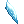
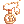
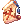
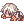
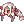

Half-Moon in the Daytime
| This quest or instance is repeatable. | ||
|---|---|---|
| Cooldown | Tickets Available | |
|
Resets at 0:00 |
Solo: 0 | Party: 0 |
Overview
| Requirements | |
|---|---|
| Base Level: | 80/130 |
| Starting Point: | rachel 175/138 |
| Rewards | |
| Experience: | Easy: 7,500,000 (Base and Job) Hard: 23,750,000 (Base) and 18,750,000 (Job) |
| Items: | 1  Dream Fragment |
The High Priestes Niren needs your help! The Pope of Arunafeltz has been sleeping an abnormal amount of hours recently. It keeps degrading and now she sleeps almost the entire day. She is starting to remember her family, which she had to forget upon taking the role of the Pope. She wants you to use a Device, the Path of Dreams, to enter her dream and see what is going on.
Walkthrough
- Speak with High Priestess Niren (
rachel 175/138) and choose Alright followed by I need time to prepare. - Talk to her again to generate the intance.
- Click on the Path of Dreams to enter the instance. This device was made to enter the Pope's dream.
- Talk to the Pope right in front of you and listen to what she has to say.
- Move to the next area with the portal.
- Do the same in the next room.
- Walk down below and speak with the Pope once more.
- Two waves of mobs will spawn, kill them all to proceed.
- An Outraged High Priest will appear, defeat him.
- If you see a white light near the stairs, click on it to receive a Ragged Doll. These will be important later on.
These appear randomly, so if you do not see it, move along.
- If you see a white light near the stairs, click on it to receive a Ragged Doll. These will be important later on.
- Talk to the Pope to continue with the story and then walk down towards the portal to enter the next area.
- Continue walking down and you will meet the Pope and Loomin. Talk to Loomin and then enter the portal below.
- You are now outside near the Zhed quarters. Speak with Pope and move to the left.
- Speak with the Pope once more. Some guards will appear and you will have to defeat them.
- Continue below and defeat the other guards. There are two other groups to defeat.
- After defeating the last group, the Pope will appear. Speak to her.
- Walk down below and enter the portal.
- You'll meet the Pope with Loomin again. Speak with her, some friends of Loomin appear and accompany you.
- Follow the navi lines on the ground and keep speaking with the Pope. You'll get multiple short stories as you go along.
- On the last cutscene, you will have to fight two waves of monsters.
- Keep following the navi line on the ground to move up to the next area. Approach the Pope to trigger the mob spawns.
- Repeat the same step until you defeat the Outraged High Priest. The Pope will then appear.
- If you see a white light on the left of where the High Priest died, click on it to receive a Ragged Doll.
These appear randomly, so if you do not see it, move along.
- If you see a white light on the left of where the High Priest died, click on it to receive a Ragged Doll.
- Speak with the Pope.
- Follow the navi direction and go near the Pope again.
- Go in the next portal down below.
- Speak with the Pope once you enter the next area.
- Loomin will appear as a mob, defeat him to proceed.
- If you did the quest on the Hard version, meaning if you are level 130 and above, you will get an extra fight.
- Speak with the Pope and this time you will get to fight against a weaker version of Ktullanux.
- The boss is fairly similar to Loomin, he has better drops however.
- Once the enemy is defeated, talk to the Pope and you will be rewarded with 1 Dream Fragment and some experience.
For each Ragged Doll collected, you will get an extra Dream Fragment. So it is important to collect those. - Exit the instance from the portal on the right.
- Speak with High Priestess Niren outside the instance to get your experience rewards (this is the hunting quest).

Enchants
Speak with the Sanctuary Goods Manager at the entrance of the instance. He will give enchant the  Freya's Necklace. This item is obtained from killing Ktullanux in the hard version (130+) of the instance. You can only enchant the ring once and it cannot be reseted. The enchant prices were lowered on NovaRO.
| Price | Enchant | Description |
|---|---|---|
| Dream Fragments x50 | Goddess of Justice A | ATK + 20, HIT + 2, Max HP + 300. |
| Dream Fragments x200 | Goddess of Justice S | ATK + 40, HIT + 4, Max HP + 600. |
| Dream Fragments x50 |  Goddess of Mercy A Goddess of Mercy A
|
MATK + 20, Heal + 4%, Max SP + 20. |
| Dream Fragments x200 |  Goddess of Mercy S Goddess of Mercy S
|
MATK + 40, Heal + 8%, Max SP + 40. |
| Dream Fragments x50 |  Goddess of Insight A Goddess of Insight A
|
Bow weapon damage + 5%, CRI + 5. |
| Dream Fragments x200 |  Goddess of Insight S Goddess of Insight S
|
Bow weapon damage + 10% CRI + 10. |
Rewards
Same as with the enchants, speak with the Sanctuary Goods Manager at the entrance of the instance. He has some items to sell.
| Price | Reward | Description |
|---|---|---|
| Dream Fragments x50 |  Pope Mercenary Scroll | A scroll that can summon Pope as mercenary. |
| Dream Fragments x50 | Pope Mercenary Scroll (casual) | A scroll that can summon Pope as mercenary (casual). |
| Dream Fragments x200 |  Drooping Lumin | Fancy hat. |
| Complete the instance at least once to complete your achievement. |  Drooping Pope | Fancy hat. |